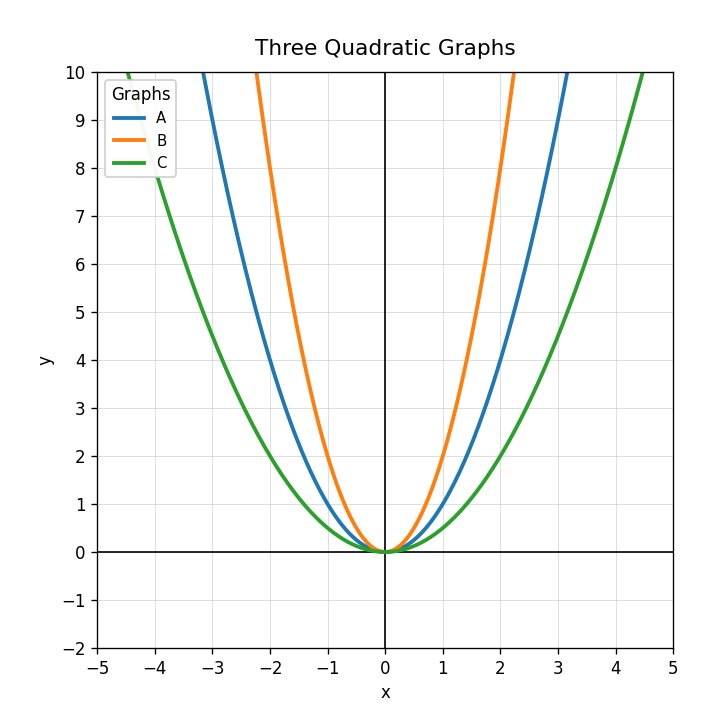
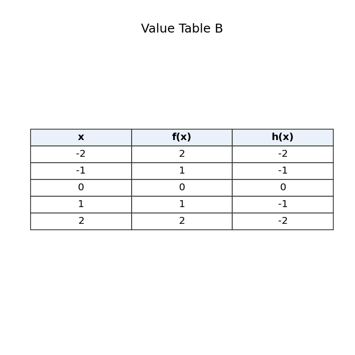
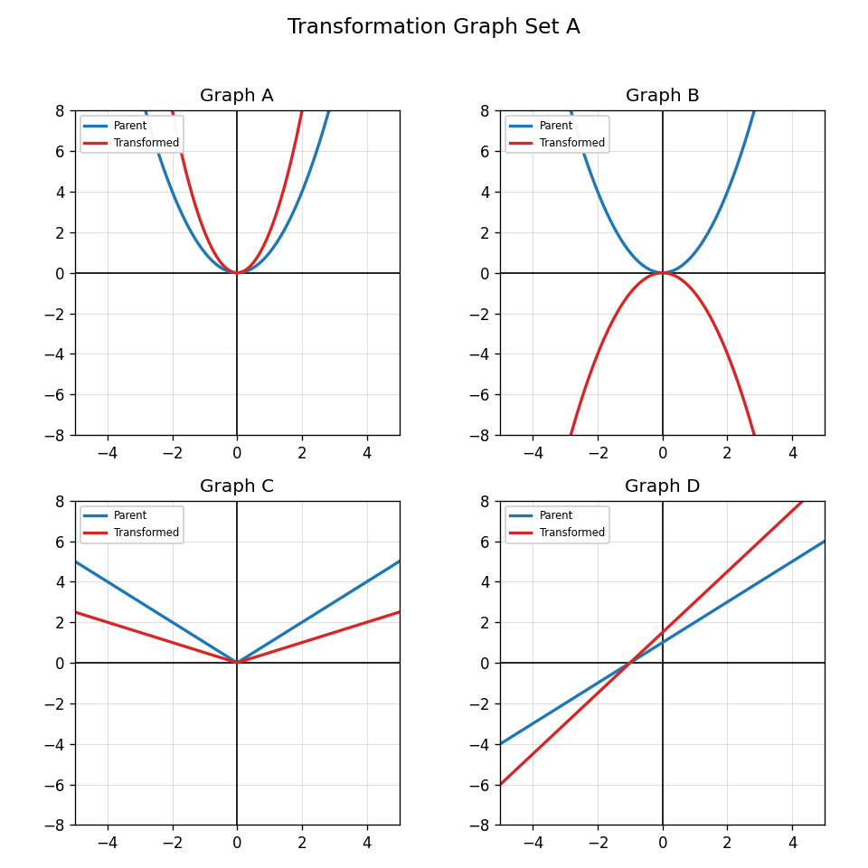

What transformation is shown by $g(x)=-f(x)$?
Use the three quadratic graphs. Match each graph to $y=x^2$, $y=2x^2$, or $y=0.5x^2$. Explain your evidence.

Use Value Table B. Explain how the table shows a reflection.

Create two transformed equations from $f(x)=|x|$: one vertical stretch and one reflection. Explain how the graphs would differ.
Which equation has a vertical shift down 2?
If $(3,7)$ shifts right 4 and down 1, what is the new point?
Does a translation change the function family? Answer yes or no and explain briefly.
What happens to the vertex of $y=x^2$ in $y=(x-2)^2+5$?
Write an equation for a square-root graph shifted right 3 and up 2.
Explain how $g(x)=f(x+1)-4$ changes the graph of $f(x)$.
A student graphs $y=(x-3)^2$ by moving $y=x^2$ left 3. Identify and correct the error.
A path is modeled by a parent quadratic and then shifted to start higher and later in time. Describe a possible translated equation and context.
Name the parent family: $f(x)=\sqrt{x}$.
Compare the key visual features of linear and square-root graphs.
Use Transformation Graph Set A and classify each parent function. Then explain one clue for each classification.

Create a mini card sort with one graph clue, one table clue, and one equation clue for a function family of your choice.